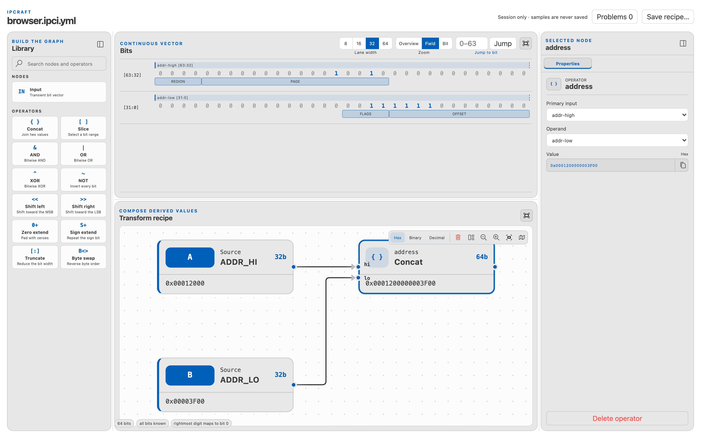
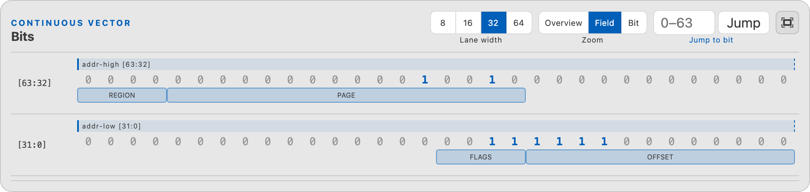
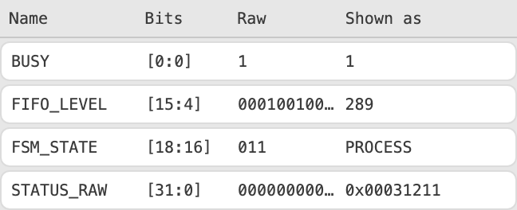
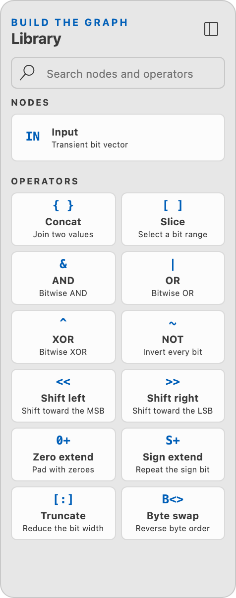
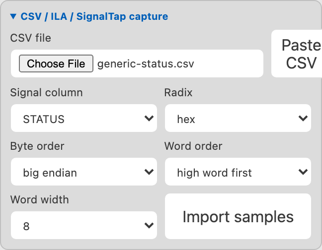

Using the Data Inspector¶
The Data Inspector turns a pasted or captured value into named fields. It does not change the IP core, memory map, or generated hardware.

Start with the right command¶
| Goal | Command |
|---|---|
| Inspect a temporary value | IPCraft: Open Data Inspector |
| Decode a known register | IPCraft: Open Register in Data Inspector |
| Save and reuse a setup | IPCraft: New Data Inspector |
A saved setup uses an .ipci.yml recipe file.
Four simple terms¶
flowchart LR
A[Sample] --> B[Named source]
B --> C[Optional operations]
C --> D[Fields decode bit ranges]- A sample is the temporary value you paste or load.
- A source gives that value a stable name and width.
- An operation creates a new value by combining or changing sources.
- A field gives a bit range a name and display format.
Recipes save sources, operations, fields, and view preferences. They do not save pasted values or capture history.
Inspect one value¶
- Run IPCraft: Open Data Inspector.
- Paste a value into Literal.
- Set Width if the value does not include one.
- Select Decode.
Accepted forms include:
| Style | Example |
|---|---|
| Verilog hexadecimal | 32'hDEAD_BEEF |
| Verilog binary | 16'b0000_XXXX_0011_ZZZZ |
| VHDL hexadecimal | x"0123_ABCD" |
| VHDL binary | b"1010_0011" |
| C-style hexadecimal | 0xDEADBEEF |
| C-style binary | 0b10100011 |
| Decimal | 3735928559 with an explicit width |
X means unknown and Z means high impedance. The inspector preserves both
states instead of treating them as zero.
Read the bit view¶

The most significant bit is on the left; bit 0 is on the right. For wide values:
- choose a lane width of 8, 16, 32, or 64 bits;
- use overview, field, or bit zoom;
- use Jump to bit to reach one position;
- use arrow keys, Home, and End between lanes.
The band above the bits shows which source supplied each range. Field overlays name decoded ranges. Inserted, masked, and dropped ranges remain visible in the operation details.
Decode a memory-mapped register¶
- Run IPCraft: Open Register in Data Inspector.
- Choose a register.
- Paste the captured value.
- Select Decode.
- Open Fields to review each range.
The import copies field names, ranges, descriptions, and known values. It does
not edit or stay linked to the .mm.yml file.

Choose an interpretation for each field:
| Interpretation | Use |
|---|---|
| Hex or binary | Raw bits, including X or Z |
| Unsigned | Counts and sizes |
| Signed | Two's-complement values |
| Enum | Named modes or states |
| Float | 16-, 32-, or 64-bit IEEE-754 values |
| Fixed point | Signed values with a chosen number of fractional bits |
An expected value adds a pass, fail, or unknown comparison.
Add fields manually¶
Use manual fields when no register describes the value:
- Select Add field.
- Set its name, highest bit, and lowest bit.
- Choose an interpretation.
- Repeat for the remaining ranges.
Fields in one overlay group cannot overlap. Create another group when you need two valid interpretations of the same bits, such as four bytes and one 32-bit signed value.
Combine or change values¶
Use the Library to add another source or an operation.

| Operation | Result |
|---|---|
| Concat | Put one value above another |
| Slice | Keep one inclusive bit range |
| AND, OR, XOR, NOT | Apply bit logic |
| Shift left or right | Shift within the same width and insert zeros |
| Zero or sign extend | Increase width |
| Truncate | Keep the low bits at a smaller width |
| Byte swap | Reverse bytes in a byte-aligned value |
For example, to build a 64-bit value from two 32-bit sources:
- Name the first source
ADDR_HI. - Add a source named
ADDR_LO. - Add Concat.
- Connect
ADDR_HIto the high input andADDR_LOto the low input.
New operations remain dashed until all required connections and values are valid. Select any node to show its result in the bit view.
Inspect a VCD waveform¶
- Select a source.
- Open Capture in the Inspector.
- Choose a VCD file and one or more signals.
- Select Index selected signals.
- Move through samples with Previous, Next, or the slider.
VCD is a waveform file format used by HDL simulators. Selecting several signals creates several sources; add Concat when they form one logical value.
Inspect CSV, ILA, or SignalTap data¶
Use capture import when a CSV file contains several samples of the same signal. The Data Inspector supports plain CSV files, Vivado ILA exports, and Quartus SignalTap exports.
- Run IPCraft: Open Data Inspector.
- Enter an initial value with the same width as the captured signal.
- Select Decode.
- Select Capture, then open CSV / ILA / SignalTap capture.
- Choose or paste a CSV file.
- Select the signal column and number base.
- Set word width, word order, and byte order.
- Select Import samples, then use the timeline to move between samples.
The initial value only sets the source width and opens the workspace. Imported samples replace it as you move along the timeline.

Word order rearranges complete words. Byte order rearranges bytes inside each word. Set both to match the capture file before adding transform operations.
Try the sample capture files¶
Use the example closest to your capture:
| Capture source | Example file | What it shows |
|---|---|---|
| Script, test, or firmware log | generic-status.csv | Selecting a signal column |
| Vivado ILA | vivado-ila-address.csv | Ignoring Vivado metadata columns |
| Quartus SignalTap | signaltap-bus.csv | Preserving unknown X and Z bits |
All three examples use these settings:
| Setting | Value |
|---|---|
| Number base | Hexadecimal |
| Byte order | Big endian |
| Word order | High word first |
| Word width | 8 |
Generic status trace¶
Start with 32'h00000000, then import
generic-status.csv. Select
STATUS as the signal column. The sample column is a label, so do not select
it as the signal.
Add these fields to check the result:
| Name | Bits | Display |
|---|---|---|
BUSY |
[0:0] |
Unsigned |
FIFO_LEVEL |
[15:4] |
Unsigned |
FSM_STATE |
[18:16] |
Unsigned or enum |
| Raw value | BUSY | FIFO_LEVEL | FSM_STATE |
|---|---|---|---|
0x00000000 |
0 | 0 | 0 |
0x00031211 |
1 | 289 | 3 |
0x00043220 |
0 | 802 | 4 |
0x00010001 |
1 | 0 | 1 |
Vivado ILA address trace¶
Start with 32'h00000000, then import
vivado-ila-address.csv. The
Data Inspector recognizes Sample in Buffer and Sample in Window as Vivado
metadata and offers ADDR as the signal column.
Add a PAGE field for bits [31:12] and an OFFSET field for bits [11:0].
The first four samples stay on page 0x12 and move through four-byte offsets.
The last sample is page 0x13, offset 0xF00.
SignalTap trace with unknown bits¶
Start with 16'h0000, then import
signaltap-bus.csv. The Data
Inspector recognizes Data: and Time: as SignalTap metadata and offers BUS
as the signal column.
Add these fields:
| Name | Bits | Display |
|---|---|---|
UPPER_BYTE |
[15:8] |
Hexadecimal |
STATE |
[7:4] |
Unsigned or enum |
FLAGS |
[3:0] |
Binary |
At 0xXXA5, UPPER_BYTE is unknown, while STATE and FLAGS still decode
because their bits are known. At 0xZZZZ, the binary view keeps the Z bits
and numeric fields show that the value is unknown.
Check word and byte order¶
For a 32-bit captured value of 12345678, set Word width to 16 and compare
the preview:
| Byte order | Word order | Imported result |
|---|---|---|
| Big endian | High word first | 32'h12345678 |
| Big endian | Low word first | 32'h56781234 |
| Little endian | High word first | 32'h34127856 |
Choose the settings that describe the capture file. If an unrelated transform is needed to make the value look correct, check the import settings again.
For your own capture, keep one header row, use one number base in the selected
column, and choose a source width large enough for every value. The source width
must be divisible by the word width. Keep X and Z digits when the capture
contains unknown states.
The Data Inspector imports one signal column at a time. To combine signals, add them as named sources and use Concat.
Save and share the setup¶
From a temporary inspector, select Save recipe. To start with an empty saved recipe, run IPCraft: New Data Inspector.
After reopening a recipe, paste or load a new sample. The saved field and operation structure is applied to that new data.
Troubleshooting¶
| Problem | Check |
|---|---|
| Decimal input is rejected | Set Width |
| Field is invalid | Confirm 0 <= lowest bit <= highest bit < source width |
| Numeric value is unknown | The field contains X or Z; use hex or binary |
| Fields overlap | Move one field or use another overlay group |
| Bitwise operation fails | Both inputs must have the same width |
| Byte swap fails | Width must be divisible by eight |
| Capture appears reversed | Check word width, then word order, then byte order |
| Added source has no value | Select it, enter a sample, and choose Set |
For implementation and exact bit-state rules, see the Data Inspector concept.